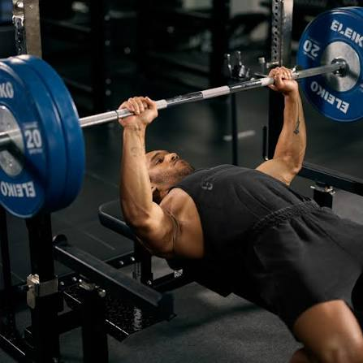
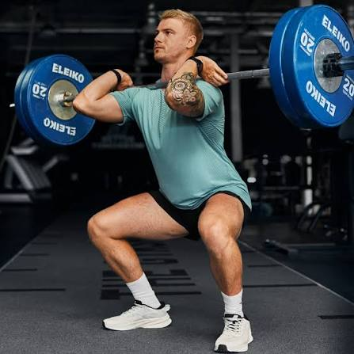
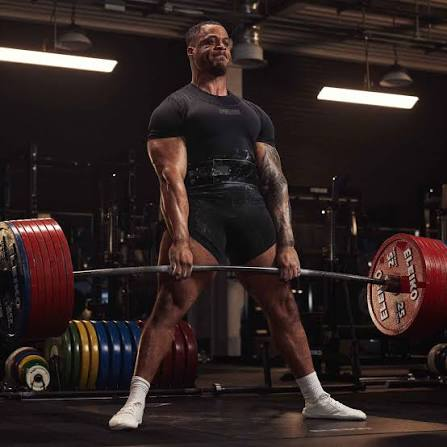

Bench Press(Wyciskanie sztangi leżąc)

Podstawowe ćwiczenie siłowe rozwijające mięśnie klatki piersiowej, przednią część barków oraz tricepsy. Wymaga stabilnej pozycji na ławce, ściągniętych łopatek i pełnej kontroli nad ruchem sztangi.
Zapisuj swoje treningi, kontroluj wyniki i obserwuj, jak rozwija się Twoja forma.

Podstawowe ćwiczenie siłowe rozwijające mięśnie klatki piersiowej, przednią część barków oraz tricepsy. Wymaga stabilnej pozycji na ławce, ściągniętych łopatek i pełnej kontroli nad ruchem sztangi.

Wielostawowe ćwiczenie wzmacniające mięśnie ud, pośladków oraz brzucha. Kluczowe jest utrzymanie prostych pleców, napiętego korpusu i pełnej stabilności stóp przez cały czas trwania ruchu.

Złożone ćwiczenie angażujące tylną część ciała, w tym mięśnie pleców, pośladków oraz dwugłowe ud. Polega na płynnym podniesieniu ciężaru z podłoża przy zachowaniu prostego kręgosłupa i napiętego brzucha.